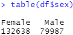
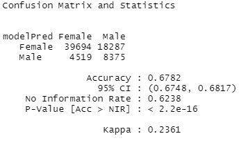
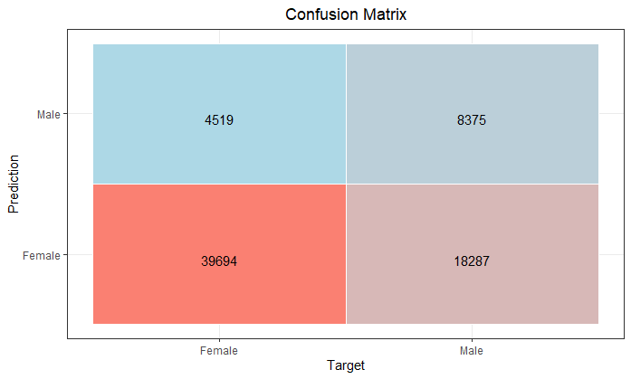

Naive Bayes is a probabilistic classifier model that is used for determining to which group (or "class") an instance belongs. As such, Naive Bayes classification allows us to determine the probability of specified features occurring for each variable and categorize said variable to the most likely class.
Naive Bayes in R (Big Five Personality Data)
The code for the analysis done below can be found here.
Naive Bayes was used to predict the sex of an individual living in the U.S. based on the Big Five Personality data set. The predictor variables used in training the model were agreeableness, extraversion, openness, conscientiousness, and neuroticism scores. Upon closer inspection of the data, we can see that there are a little over 60% more women in the data set than men. In order to account for this, the data was split by sex. Then, to the sex-separated data sets, the data was further split 80-20 into training and test sets. Once creating training and test sets for each sex, the training and test sets were merged again to create one training and one test set. In doing this, the female:male ratio can be preserved in both the training and test sets, which should result in a more accurate and reflective Naive Bayes classification.


Upon using the Naive Bayes model on the aforementioned training and test data sets, the output on the left was determined. The Naive Bayes model resulted in an extremely low p-value, which suggests that this is a reliable method for predicting an individual's sex based on their Big Five Personality scores. However, an accuracy of 0.6782 suggests that the model itself is not extremely strong. Since there are only two classifier groups (i.e. Male or Female), random guesses would result in an accuracy 0.5. As such, our model is only 17-18% better than if the model were to just guess an individual's randomly. This makes the model not great, but not completely useless; rather, these results suggest that this model shouldn't be the sole determinant for predicting an individual's sex from their Big Five Personality scores.
The confusion matrix statistical output can also be visualized with a confusion matrix plot, shown on the right. An interesting detail to note is the relatively high number of false positives from the Naive Bayes classification. The bottom right corner shows that the model incorrectly predicted a male individual as female over 18,000 times. This may be the result from having an unevenly balanced data set, where there were over 60% more women than men.

Naive Bayes in Python (Big Five Personality Data)